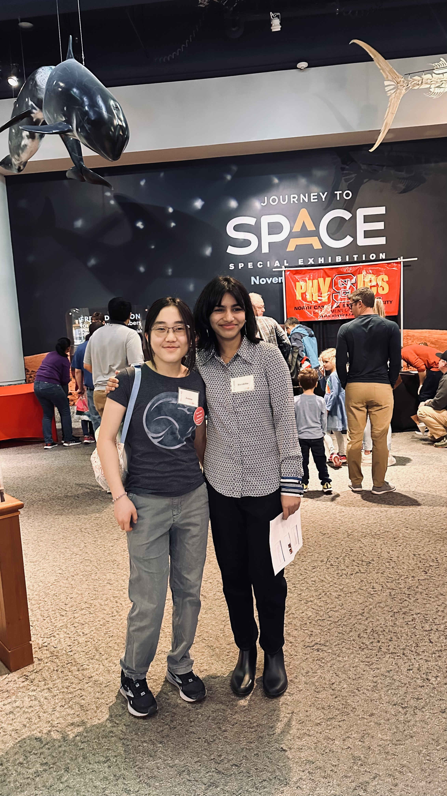
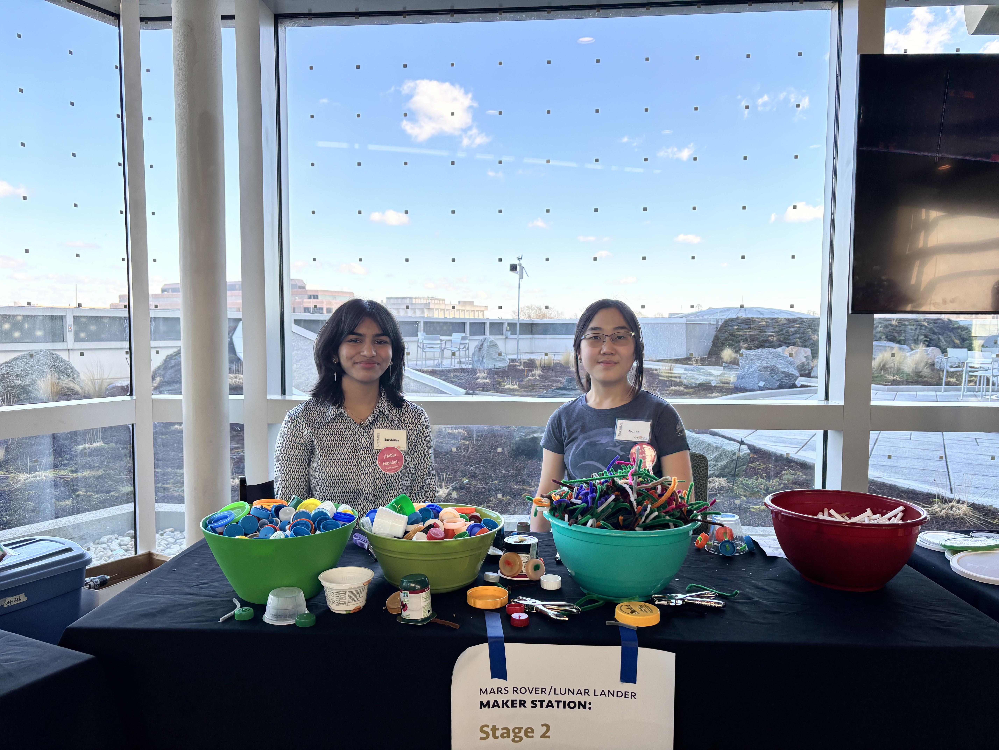
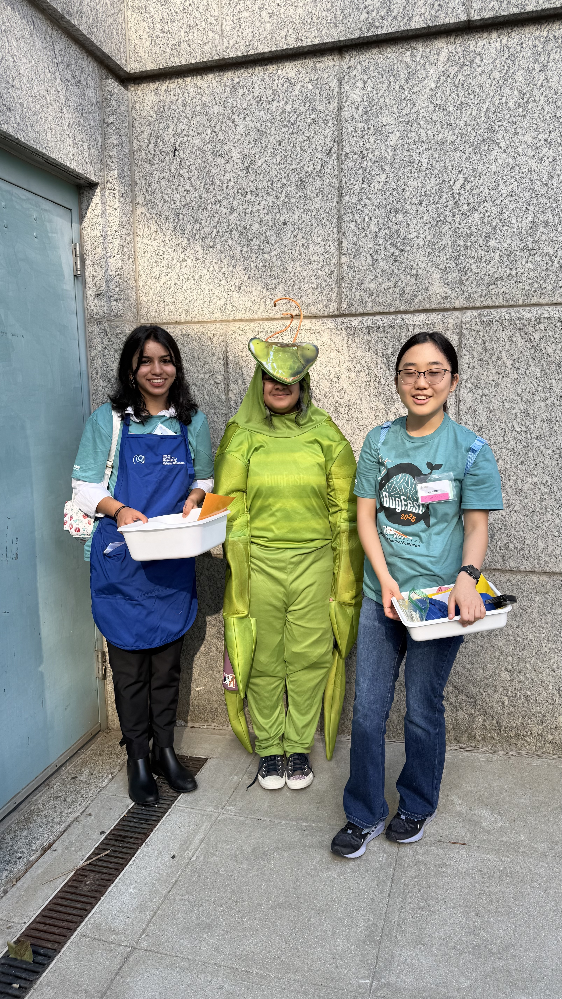

Academic Foundation
I’m a Panther Creek High School student (Class of 2027) with a 4.4+ GPA, taking rigorous AP and Honors courses including AP U.S. Government, AP Statistics, and AP Pre-Calculus.
I’m a high school student (Class of 2027) at Panther Creek High School with a 4.4+ GPA, and I’m building my work around AI, computer science, STEM outreach, leadership, and community-focused engagement.
Current Focus
My resume highlights include Duke University’s Advances in AI program, Harvard CS50, Wake Tech coursework in UX, cybersecurity, and network foundations, and active involvement in school and community organizations.
GPA 4.4+
100+ volunteer hours
AP Scholar (2025, 2026)

About Me
My interests sit at the intersection of history, biology, artificial intelligence, and computer science. I’m especially drawn to how technical tools and human-centered thinking can work together to create meaningful change in real communities.
I currently serve as a Grader/Substitute/Admin at Best Brains and stay active in organizations such as DECA, Key Club, FemSTEM, Girls Who Code, Step Up Tutoring, and a Cisco High School Externship. My strengths include thoughtful problem-solving, focused execution, and empathetic communication.
Research Journey
I’m a Panther Creek High School student (Class of 2027) with a 4.4+ GPA, taking rigorous AP and Honors courses including AP U.S. Government, AP Statistics, and AP Pre-Calculus.
I’ve explored AI and tech through Duke’s Advances in AI program, Harvard CS50, and Wake Tech coursework in UX Design, Cybersecurity, Network & Security Foundations, and information systems business concepts.
I’ve contributed more than 100 volunteer hours through museum STEM exhibits, outreach events, and Key Club service projects focused on community awareness and support.
Featured Story
Photo Highlights

Maker Experience
I use hands-on problem-solving and activity-based learning to make science feel both engaging and accessible.

Community Outreach
I participate in public-facing educational environments that help make science more approachable and welcoming.
Academic Presence
These experiences reflect my interest in science communication, hands-on learning, and engaging with the community.
Explore Pathways
Education
Panther Creek High School (4.4+ GPA), AP/Honors coursework, and Wake Tech dual enrollment in UX, cybersecurity, and network/security foundations.
Experience
Best Brains instructional role, Career Accelerator programs, and practical workplace communication and mentoring experience.
Technical
Duke Advances in AI, Harvard CS50, ethical AI policy writing, and foundational security and design fluency.
Leadership
DECA, Key Club, FemSTEM, Step Up Tutoring, and community service projects with measurable engagement.
Service
100+ hours supporting museum exhibits, adaptive sports logistics, shelter volunteering, and cultural/community events.
Recognition
AP Scholar awards, Faculty Choice distinctions, national recognition, PMI certification, and Cisco networking certification.
Contact
My primary contact details are listed below, with my resume included as supporting material.